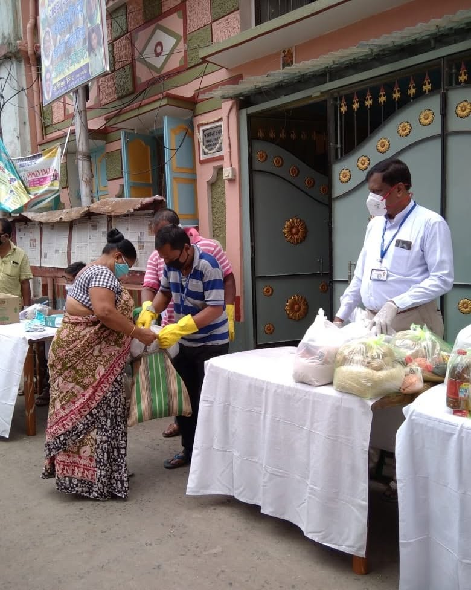

01 / ENVIRONMENT
Project Prakriti
20,000+ Native Trees Planted
Combating deforestation, heat islands, and ecological erosion across rural and peri-urban belts in Bilaspur. Prakriti organizes native sapling drives, village panchayat tree adoption, and anti-plastic community workshops.
